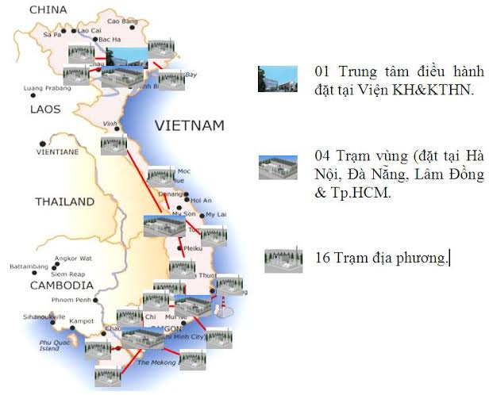

Trạm quan trắc còn quá thưa — dữ liệu môi trường thiếu minh bạch

Cả nước chỉ có vài chục trạm quan trắc không khí, tập trung chủ yếu ở các thành phố lớn. Các tỉnh lẻ, vùng nông thôn gần như không có dữ liệu.